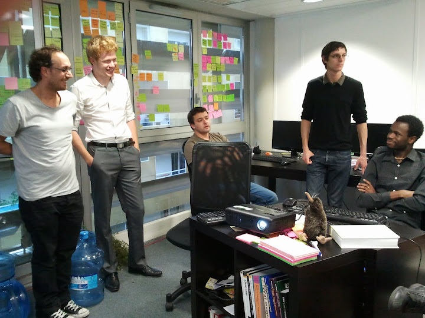
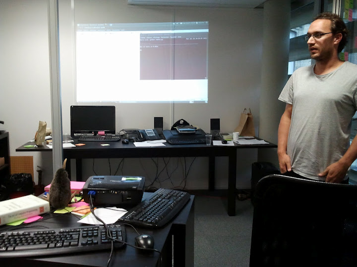
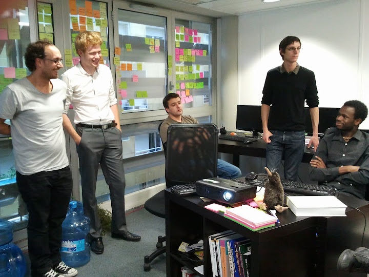
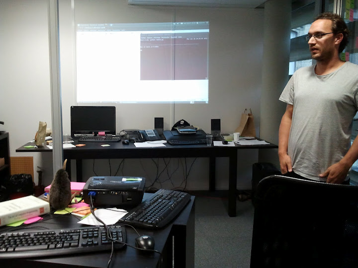

Le dojo de programmation est un espace ouvert à tous, gratuit, dans lequel nous essayons de nous améliorer dans notre pratique de la programmation, en nous amusant !
Aucun niveau de compétence n’est nécessaire.
L’organisation du dojo est malléable et vivante :
| Les 2nds lundis du mois | Les 3ème mercredi du mois | Les 4èmes lundis du mois |
|---|---|---|
| de 18h30 à 20h30 | de 18h30 à 20h30 | de 18h30 à 20h30 |
| dans les locaux d’Arpinum | dans les locaux de FSecure | dans les locaux de Yaal |
| Technoclub bâtiment B, Avenue de l’hippodrome à Gradignan | 9 avenue Raymond Manaud - BAT C4.3 33520 Bruges | Auberge Numérique, 145 rue Achard à Bordeaux |
| plan | plan | plan |
 


